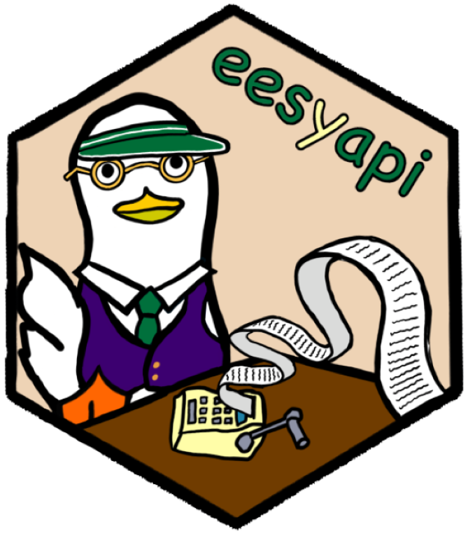

Parse contents of API data set json output
parse_api_dataset.RdThis takes the json results output from the API and converts it into a usable data frame. It's primary use is as a helper to get_dataset and post_dataset, but can be used in isolation from those by running an API query and passing the following to parse_api_dataset(): response |> httr::content("text") |> jsonlite::fromJSON() |> parse_api_dataset()
Examples
api_url(
"get-data",
dataset_id = example_id(), indicators = example_id("indicator"), page_size = 10
) |>
httr::GET() |>
httr::content("text") |>
jsonlite::fromJSON() |>
parse_api_dataset()
#> code period geographic_level LA NAT SCH f2GYF tu1Em PbNeb
#> 1 AY 2022/2023 SCH QIqwb dP0Zw 59BKd 9Rpn4 NwcLD 108
#> 2 AY 2022/2023 SCH QIqwb dP0Zw 59BKd HJjXz NwcLD 89
#> 3 AY 2022/2023 SCH QIqwb dP0Zw 59BKd 7YbEX NwcLD 108
#> 4 AY 2022/2023 SCH QIqwb dP0Zw 59BKd iNW86 NwcLD z
#> 5 AY 2022/2023 SCH QIqwb dP0Zw 59BKd u9vRo NwcLD z
#> 6 AY 2022/2023 SCH QIqwb dP0Zw 59BKd XHEvf NwcLD z
#> 7 AY 2022/2023 SCH QIqwb dP0Zw 59BKd LleUW NwcLD z
#> 8 AY 2022/2023 SCH QIqwb dP0Zw 59BKd a2eWL NwcLD z
#> 9 AY 2022/2023 SCH QIqwb dP0Zw 59BKd Bfbf7 NwcLD z
#> 10 AY 2022/2023 SCH QIqwb dP0Zw 59BKd qGKqj NwcLD z